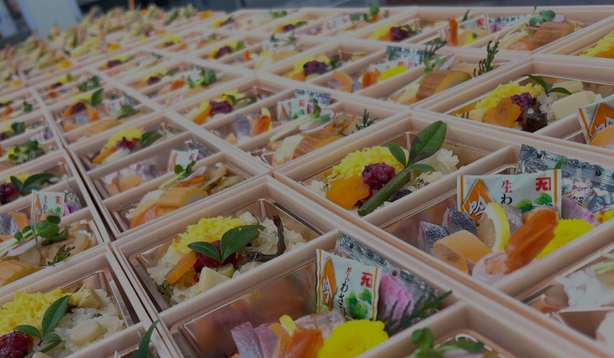
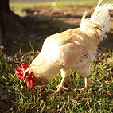
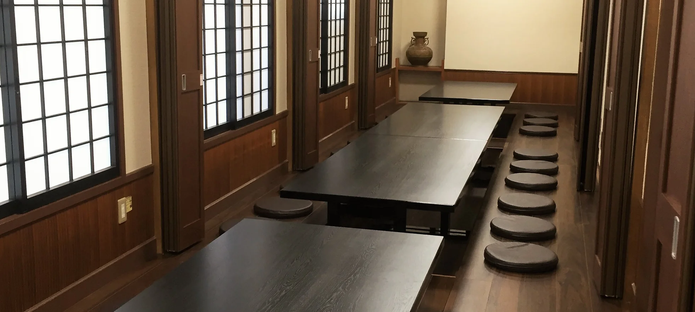

こだわり
-

播州百日鷄
通常のブロイラーは、約５０日間で育てられるところ、その倍の約１００日間掛けて、自然に近い環境の中で大切に育てられています。肉質は繊維質が細やかで歯ごたえもあり、それでいて口当たりがよく鶏本来のうまみを味わえるのが特徴です。ツウの間では、大人気の地元の特産品『播州百日鶏』を是非ご賞味ください。
-
黒田庄和牛
数ある和牛産地の中でも5代前のご先祖様までが兵庫県で産まれ育ち、プロの目によって選りすぐられた最高の和牛たちだけに与えられる称号「神戸ビーフ」。その神戸ビーフの主産地である黒田庄町で育ています。そんな『黒田庄和牛』を是非ご賞味ください。
-

快適スペースで
おもてなし50名様まで収容できる大広間や少人数から使える落ち着いた個室、レイアウト自在な解放感のあるゆったり寛げるフロアなどのお部屋があり、「リストご家族でのお集まり、各種お祝い行事や法事など、あらゆる集いの場を料理長自慢のお料理とともにご提供させていただきます。
店舗案内
和食屋
| アクセス | 〒673-1431兵庫県加東市社30-1 |
|---|---|
| 電話番号 | 0795-42-3558 |
| 定休日 | 月曜日 |
| 営業時間 | 11:00～14:30（L.O.14:00） |
| 17:00～22:00 (要予約) |
 お問い合わせ
お問い合わせ